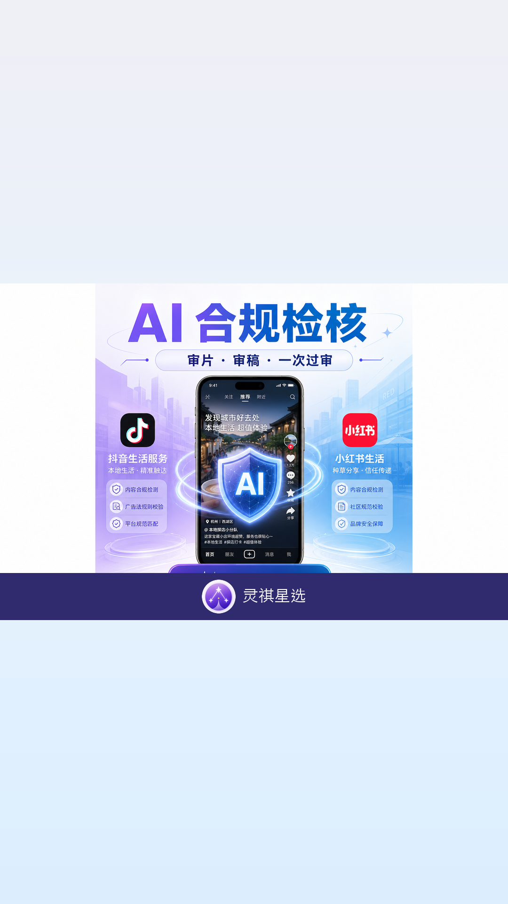
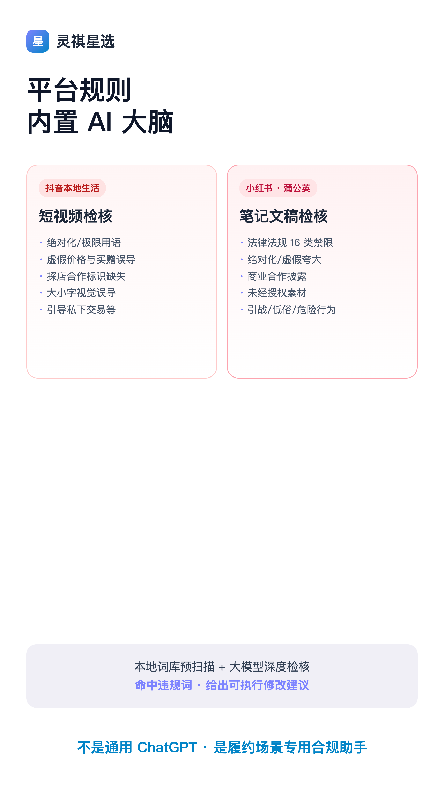
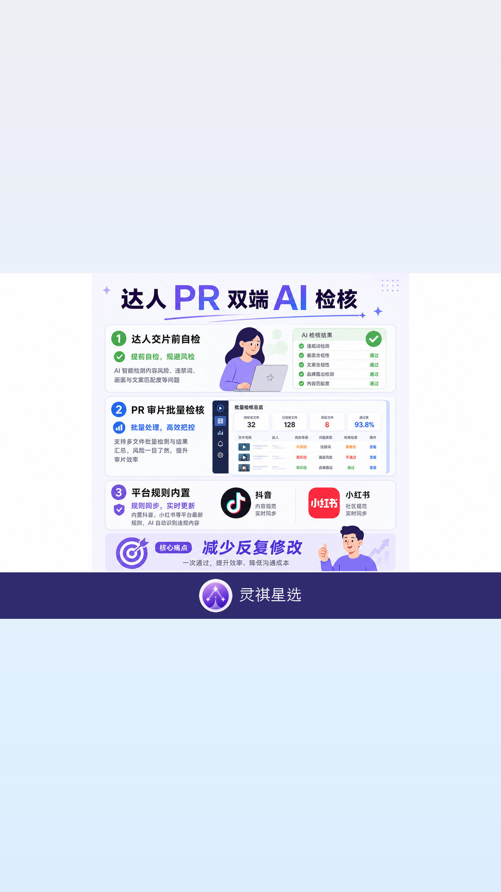
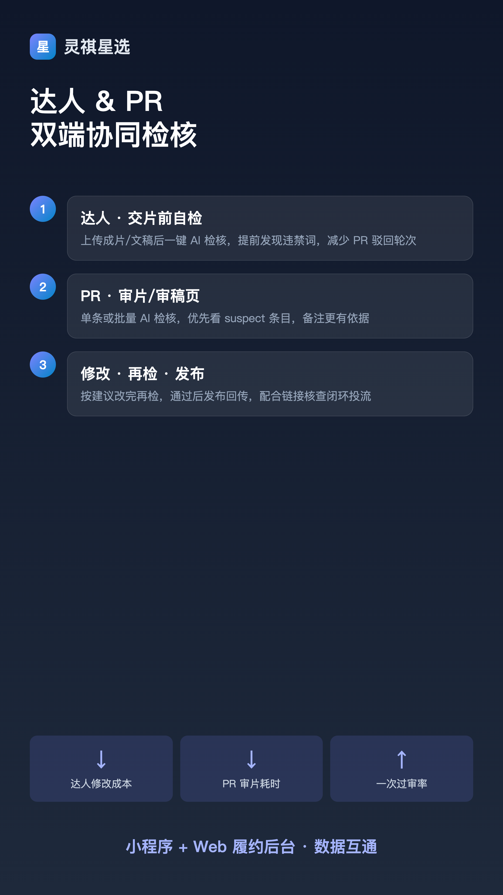
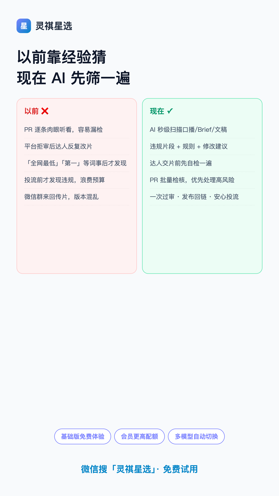
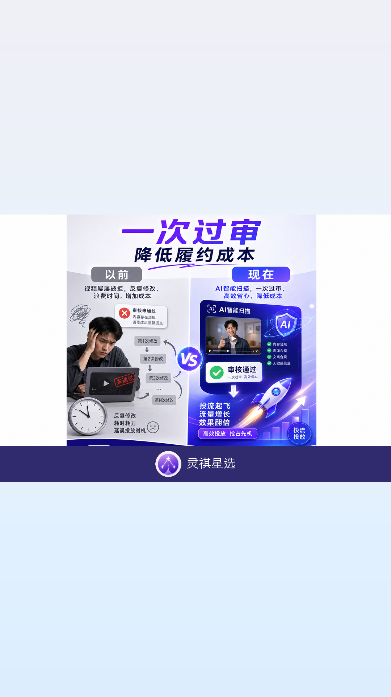
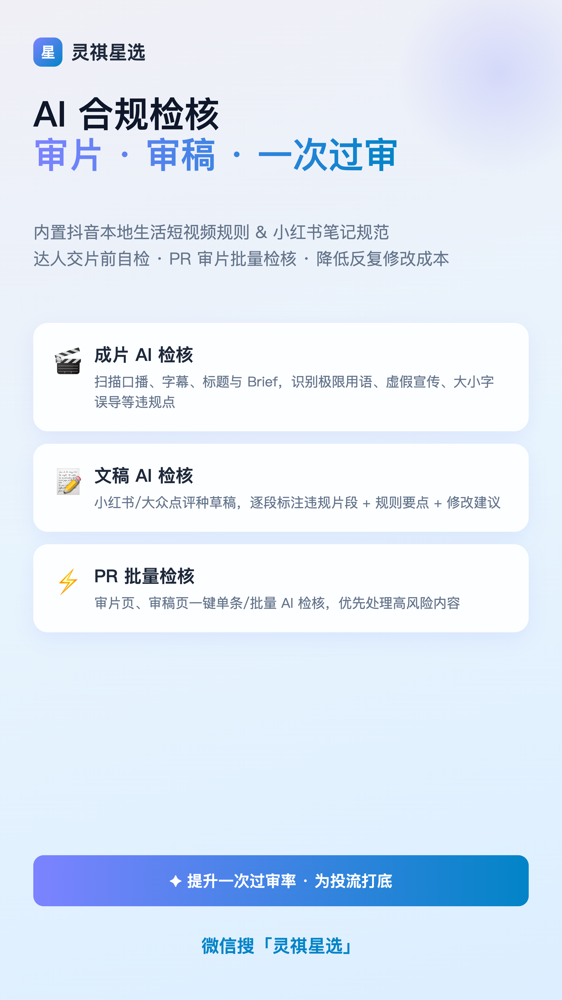

—— 灵祺星选 · 功能升级 ——
做本地生活探店的 PR 都懂：隐性成本往往不在发单，而在审片。一条成片交上去，平台说违规；改一版，Brief 又对不上；再改一版，投流前才发现「全网最低」这种词……
😫 常见痛点
· PR 逐条肉眼听看，容易漏检
· 达人改三四版，项目周期被拖长
· 平台拒审后才发现极限用语
· 投流前才踩雷，浪费预算和时间

▲ AI 合规检核：审片 · 审稿 · 一次过审
✦ 这一次，规则写进 AI 里 ✦
🎬 成片 AI 检核（审片）
内置抖音本地生活短视频规则，扫描口播、字幕、标题与 Brief，识别极限用语、虚假价格、大小字误导、探店标识缺失等。
📝 文稿 AI 检核（审稿）
对接小红书笔记规范，逐段标注违规片段 + 规则要点 + 可执行修改建议。
⚡ PR 批量检核
审片页 / 审稿页支持单条或批量 AI 检核，优先处理高风险内容，审片更有依据。
AI 扫描动效演示
▲ 本地词库预扫描 + 大模型深度检核，秒级出结果

▲ 不是通用 ChatGPT · 是履约场景专用合规助手
达人 & PR 双端协同
① 达人 · 交片前自检
上传成片/文稿后一键 AI 检核，提前发现违禁词，减少 PR 驳回轮次
② PR · 审片/审稿页
单条或批量 AI 检核，优先看 suspect 条目，备注更有依据
③ 修改 · 再检 · 发布
按建议改完再检，通过后发布回传，配合链接核查闭环投流


以前靠经验猜 · 现在 AI 先筛一遍



五个版本优势，一句话总结
✅ 规则内置 — 按平台规则检核，不是让 PR 凭经验猜
✅ 达人先自检 — 问题前置到交片前，减少驳回轮次
✅ PR 批量检核 — 几十条成片秒级初筛，优先高风险
✅ 可执行反馈 — 违规片段 + 规则 + 修改建议
✅ 降本增效 — 少改片、少听看、提升一次过审率
微信搜「灵祺星选」
达人 · PR · 拍摄 · 剪辑 一个入口
基础版可免费体验 AI 合规检核
找商单 · 发招募 · 审片审稿 · 履约闭环
灵祺星选不做结算，结算在抖音来客 / 抖音林客平台侧完成
— END —